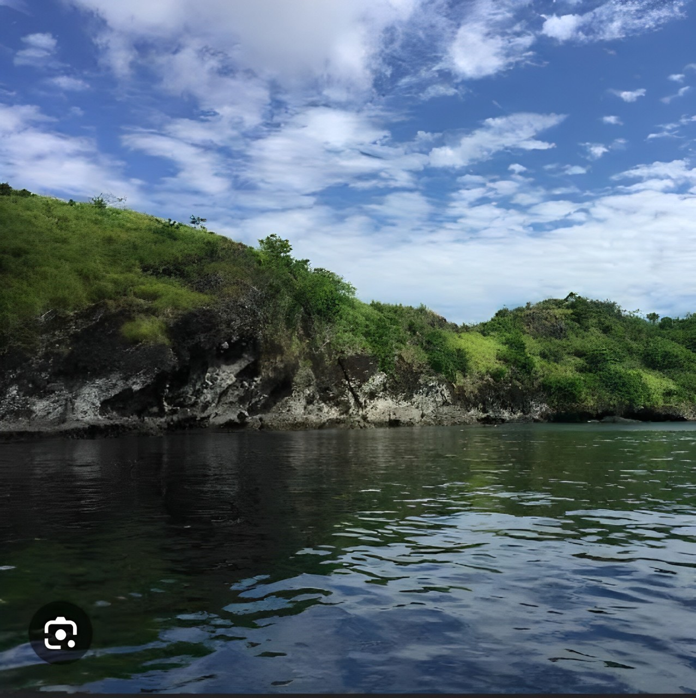
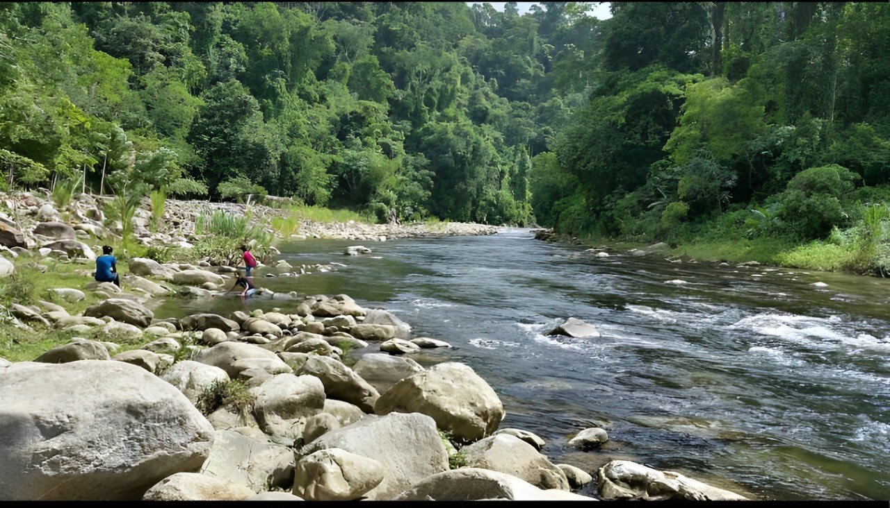
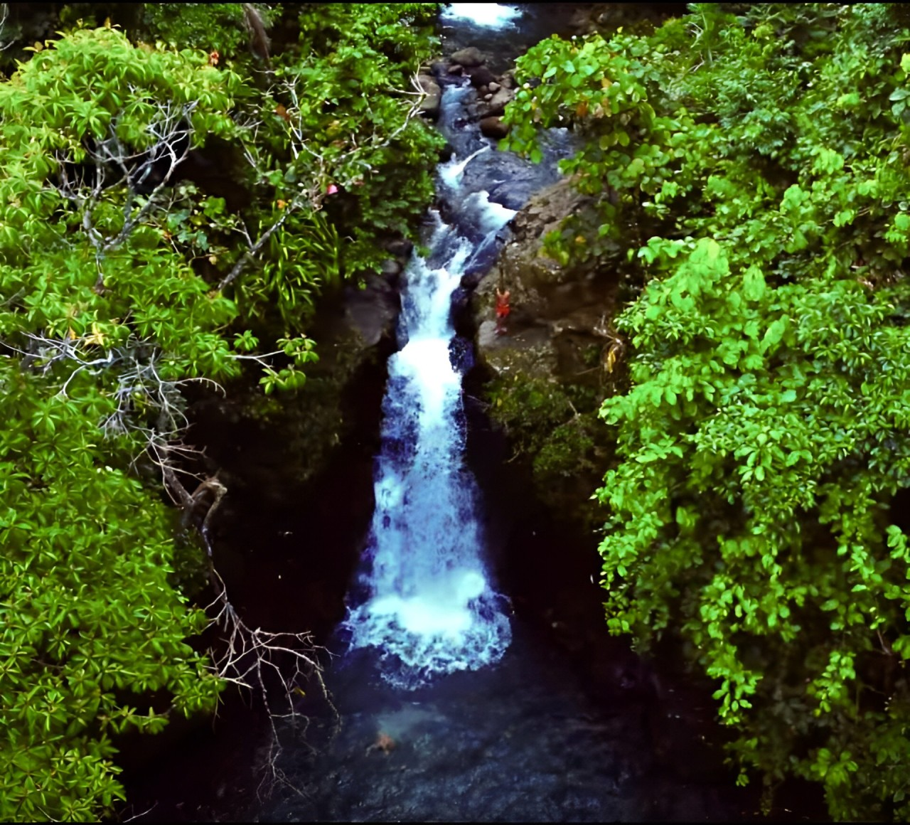

TOP THREE TOURIST SPOT OF MUNICIPALITY OF TANGCAL
LINDONGAN RIVER
 The Lindongan River is a breathtaking natural wonder, boasting crystal-clear waters
that gently flow through a lush, emerald-green landscape. The river's serene ambiance
is enhanced by the warm, golden sunlight filtering through the canopy above,
casting a mesmerizing dance of light and shadow on its tranquil surface.
KENDIS RIVER
 it is called Kendis river which is found in tangcal lanao del norte between two barangays
PROPER, to barangay BERUAR
The crystal clear water of the river flows smoothly
over a bed of rounded stones and boulders.
Smooth, jagged rocks and jagged rocks
line the bottom of the river, creating a gentle current.
KALIBUGAN FALLS
 Kalibugan falls known for its refreshing waters and verdant sorroundings. Nature lovers
can also explore Tangcal River, a perfect spot for river trekking and immersing oneself
in the serenity of the sourrounding landscapes.